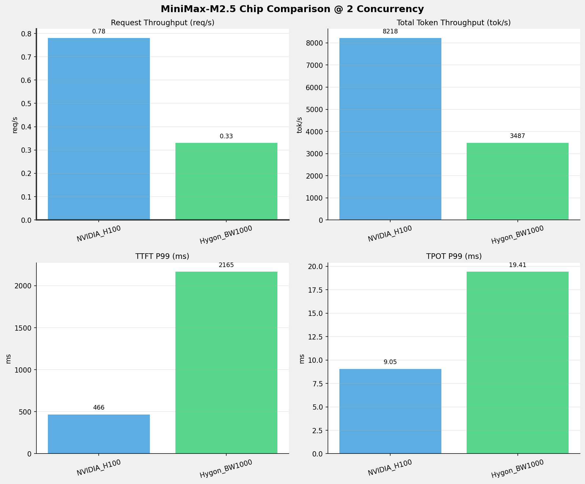
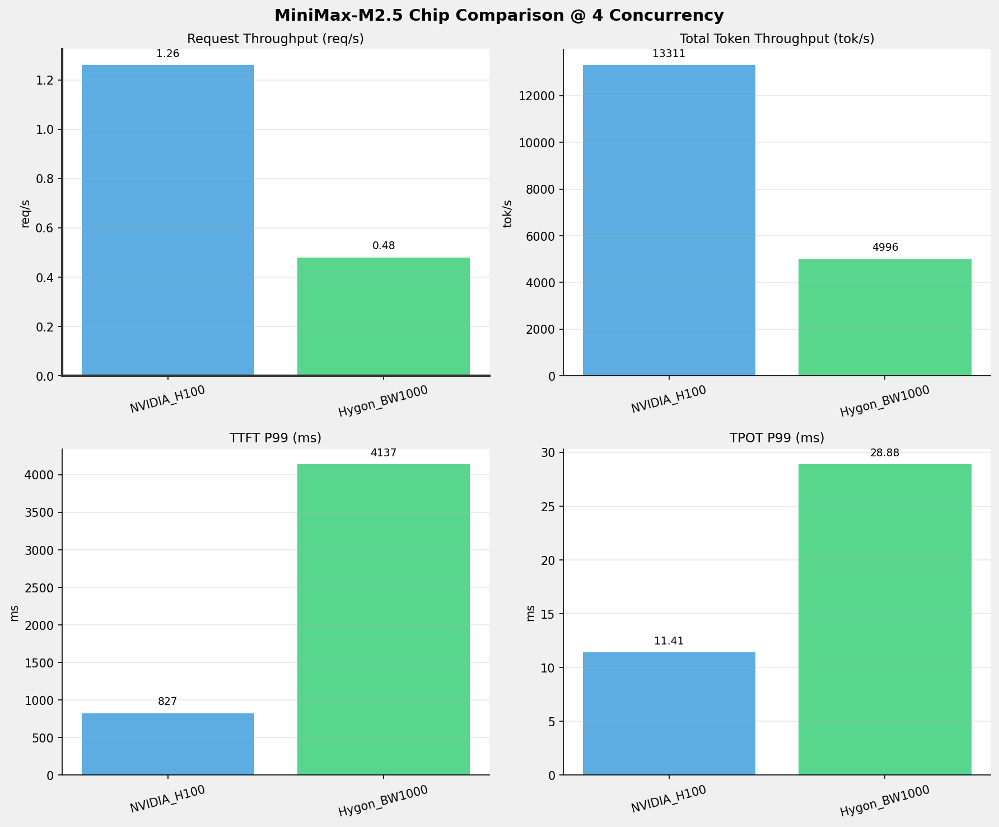
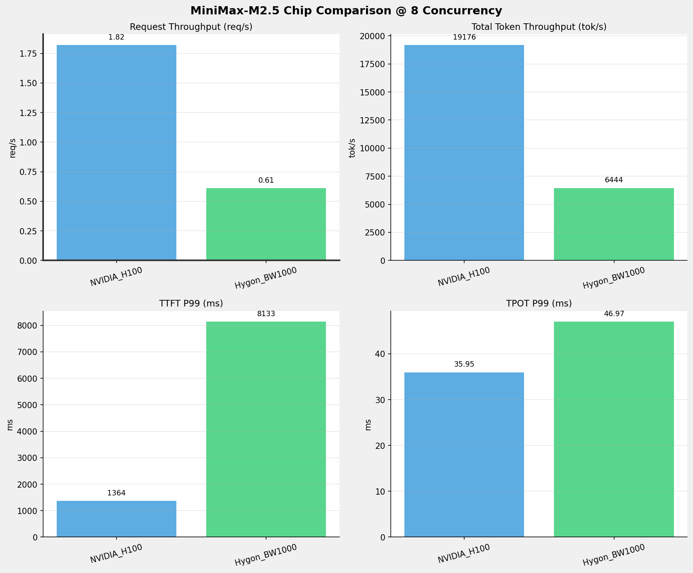
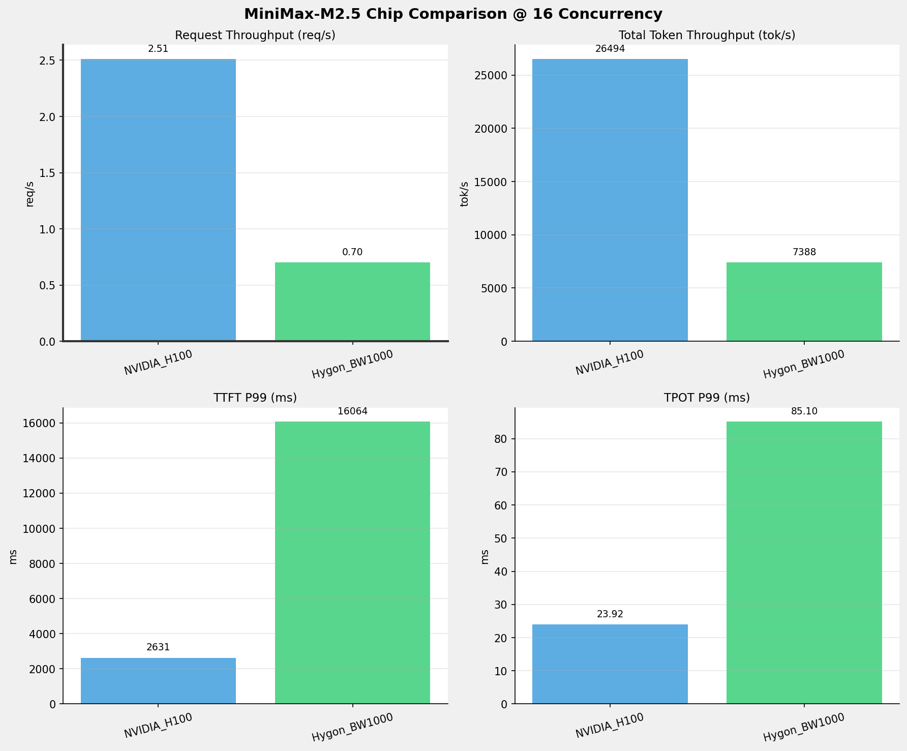
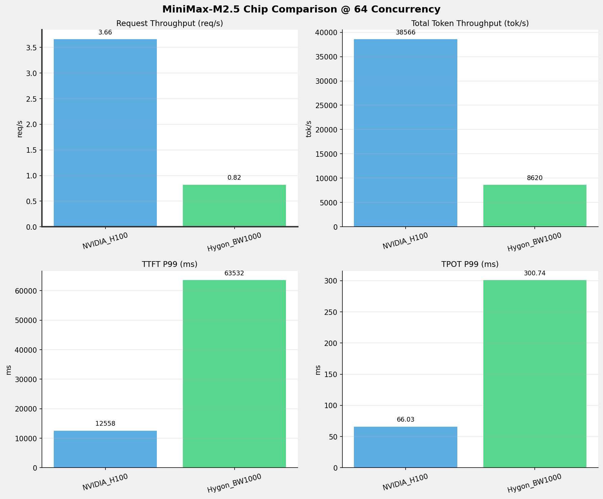
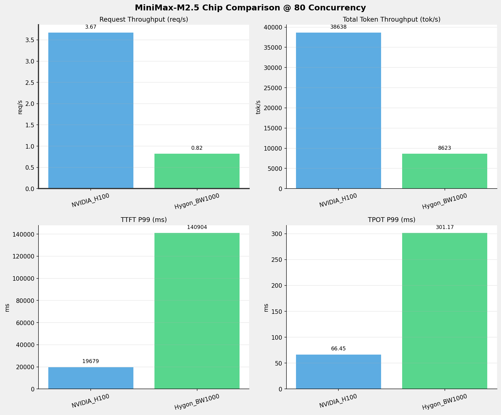
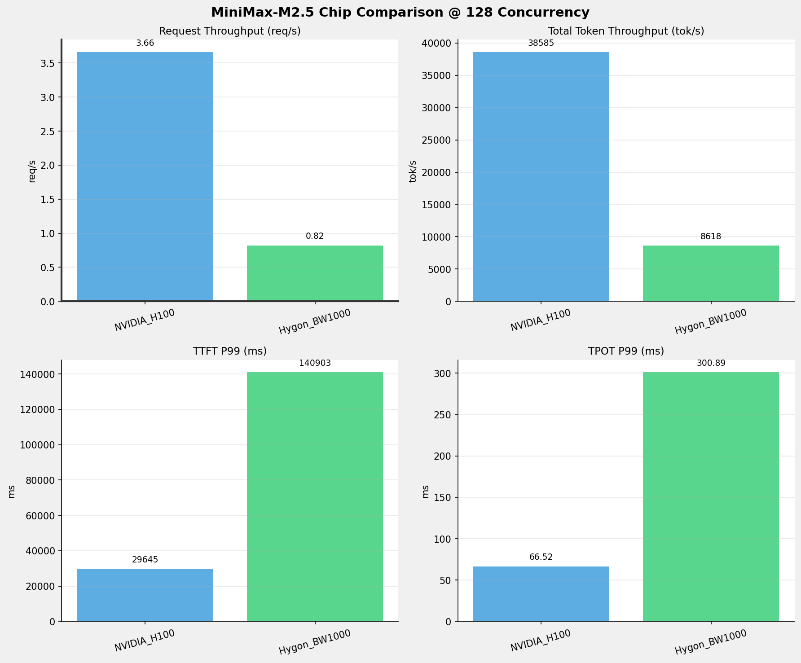
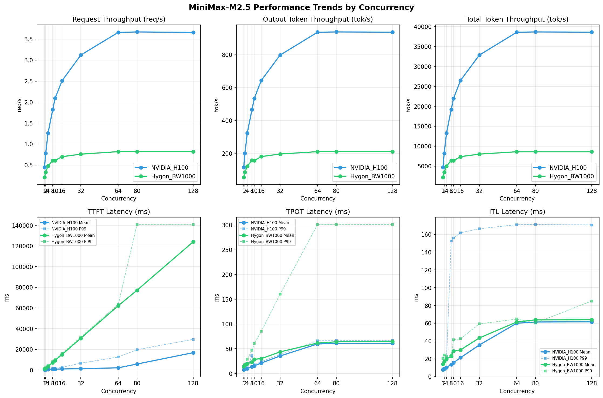

在固定请求数，输入上下文和输出上下文长度下，使用vllm bench serve工具对并发数逐级增加场景的性能基准验证。并对比同一模型在不同芯片环境上的性能指标。
主要采集指标：
| 指标 | 单位 | 含义 |
|---|---|---|
| TTFT | ms | Time To First Token，首 token 延迟 |
| TPOT | ms/token | Time Per Output Token，每 token 生成时间 |
| Throughput | tokens/s | 系统总吞吐 |
| QPS | requests/s | 请求吞吐 |
| P50/P95/P99 Latency | ms | 延迟分位数 |
| 项目 | 配置 | 备注 |
|---|---|---|
| 数据集 | random | |
| 并发数 | 1, 2, 4, 8, 10, 16, 32, 64, 80, 128 | |
| 总请求数 | 320 | |
| 请求输入上下文长度 | 10240（10k） | |
| 请求输出上下文长度 | 256（0.25k） | |
| 被测芯片 | NVIDIA_H100, Hygon_BW1000 | |
| 被测模型 | MiniMax-M2.5 |
| 参数名称 | NVIDIA_H100 | Hygon_BW1000 |
|---|---|---|
| max_position_embeddings | 196608 | 196608 |
| model_name | MiniMax-M2.5 | MiniMax-M2.5-W8A8 |
| model_size | 215G | 215G |
| python_version | 3.12.3 | 3.10.12 |
| quantization_config | FP8 | int-8 |
| temperature | 1.0 | N/A |
| top_k | 40 | N/A |
| top_p | 0.95 | N/A |
| transformers_version | 4.46.1 | 4.57.6 |
| vllm_version | 0.20.0 | 0.15.1+das.opt1.alpha.dtk2604 |
| 参数名称 | NVIDIA_H100 | Hygon_BW1000 |
|---|---|---|
| Block Size | default | default |
| Compilation Config | N/A | N/A |
| Dp | 1 | 1 |
| Dtype | default | bfloat16 |
| Enable Auto Tool Choice | True | True |
| Enable Export Parallel | True | True |
| Gpu Memory Utilization | 0.85 | 0.9 |
| Max Model Len | 196608 | 196608 |
| Max Num Batched Tokens | 8192 | default |
| Max Num Seqs | 64 | 64 |
| Model Name | MiniMax-M2.5 | MiniMax-M2.5-W8A8 |
| Pp | 1 | 1 |
| Reasoning Parser | minimax_m2 | minimax_m2 (不生效) |
| Tool Call Parser | minimax_m2 | minimax_m2 |
| Tp | 8 | 8 |
1并发
2并发

4并发

8并发

10并发
16并发

32并发
64并发

80并发

128并发


| 并发数 | NVIDIA_H100 | Hygon_BW1000 | 差值 | 百分比 |
|---|---|---|---|---|
| 1 | 0.45 | 0.21 | -0.24 | -53.3% |
| 2 | 0.78 | 0.33 | -0.45 | -57.7% |
| 4 | 1.26 | 0.48 | -0.78 | -61.9% |
| 8 | 1.82 | 0.61 | -1.21 | -66.5% |
| 10 | 2.09 | 0.61 | -1.48 | -70.8% |
| 16 | 2.51 | 0.70 | -1.81 | -72.1% |
| 32 | 3.12 | 0.76 | -2.36 | -75.6% |
| 64 | 3.66 | 0.82 | -2.84 | -77.6% |
| 80 | 3.67 | 0.82 | -2.85 | -77.7% |
| 128 | 3.66 | 0.82 | -2.84 | -77.6% |
| 并发数 | NVIDIA_H100 | Hygon_BW1000 | 差值 | 百分比 |
|---|---|---|---|---|
| 1 | 115.31 | 54.28 | -61.03 | -52.9% |
| 2 | 199.70 | 85.05 | -114.65 | -57.4% |
| 4 | 323.45 | 121.84 | -201.61 | -62.3% |
| 8 | 465.99 | 157.18 | -308.81 | -66.3% |
| 10 | 534.52 | 155.66 | -378.86 | -70.9% |
| 16 | 643.80 | 180.19 | -463.61 | -72.0% |
| 32 | 797.81 | 195.69 | -602.12 | -75.5% |
| 64 | 937.16 | 210.25 | -726.91 | -77.6% |
| 80 | 938.91 | 210.32 | -728.59 | -77.6% |
| 128 | 937.61 | 210.20 | -727.41 | -77.6% |
| 并发数 | NVIDIA_H100 | Hygon_BW1000 | 差值 | 百分比 |
|---|---|---|---|---|
| 1 | 4745.14 | 2225.40 | -2519.74 | -53.1% |
| 2 | 8217.92 | 3487.19 | -4730.73 | -57.6% |
| 4 | 13310.92 | 4995.56 | -8315.36 | -62.5% |
| 8 | 19176.39 | 6444.25 | -12732.14 | -66.4% |
| 10 | 21996.95 | 6382.12 | -15614.83 | -71.0% |
| 16 | 26494.03 | 7387.79 | -19106.24 | -72.1% |
| 32 | 32831.81 | 8023.25 | -24808.56 | -75.6% |
| 64 | 38566.45 | 8620.30 | -29946.15 | -77.6% |
| 80 | 38638.21 | 8623.30 | -30014.91 | -77.7% |
| 128 | 38585.00 | 8618.28 | -29966.72 | -77.7% |
| 并发数 | NVIDIA_H100 | Hygon_BW1000 | 差值 | 百分比 |
|---|---|---|---|---|
| 1 | 286.01 | 1168.49 | +882.48 | +308.5% |
| 2 | 466.40 | 2165.32 | +1698.92 | +364.3% |
| 4 | 826.89 | 4137.09 | +3310.20 | +400.3% |
| 8 | 1364.44 | 8133.44 | +6769.00 | +496.1% |
| 10 | 1534.23 | 10081.63 | +8547.40 | +557.1% |
| 16 | 2630.84 | 16063.93 | +13433.09 | +510.6% |
| 32 | 6556.86 | 31917.86 | +25361.00 | +386.8% |
| 64 | 12557.76 | 63531.55 | +50973.79 | +405.9% |
| 80 | 19679.20 | 140904.11 | +121224.91 | +616.0% |
| 128 | 29645.32 | 140903.29 | +111257.97 | +375.3% |
| 并发数 | NVIDIA_H100 | Hygon_BW1000 | 差值 | 百分比 |
|---|---|---|---|---|
| 1 | 7.68 | 14.16 | +6.48 | +84.4% |
| 2 | 9.05 | 19.41 | +10.36 | +114.5% |
| 4 | 11.41 | 28.88 | +17.47 | +153.1% |
| 8 | 35.95 | 46.97 | +11.02 | +30.7% |
| 10 | 17.75 | 60.61 | +42.86 | +241.5% |
| 16 | 23.92 | 85.10 | +61.18 | +255.8% |
| 32 | 38.79 | 160.15 | +121.36 | +312.9% |
| 64 | 66.03 | 300.74 | +234.71 | +355.5% |
| 80 | 66.45 | 301.17 | +234.72 | +353.2% |
| 128 | 66.52 | 300.89 | +234.37 | +352.3% |
| 并发数 | NVIDIA_H100 | Hygon_BW1000 | 差值 | 百分比 |
|---|---|---|---|---|
| 1 | 8.57 | 20.17 | +11.60 | +135.4% |
| 2 | 16.54 | 24.07 | +7.53 | +45.5% |
| 4 | 18.61 | 22.80 | +4.19 | +22.5% |
| 8 | 152.68 | 24.15 | -128.53 | -84.2% |
| 10 | 155.84 | 41.33 | -114.51 | -73.5% |
| 16 | 161.83 | 42.55 | -119.28 | -73.7% |
| 32 | 166.38 | 59.25 | -107.13 | -64.4% |
| 64 | 170.95 | 64.72 | -106.23 | -62.1% |
| 80 | 171.22 | 60.21 | -111.01 | -64.8% |
| 128 | 170.62 | 85.02 | -85.60 | -50.2% |
| 指标 | NVIDIA_H100 | Hygon_BW1000 |
|---|---|---|
| 成功请求数 | 320 | 320 |
| 失败请求数 | 0 | 0 |
| 测试持续时间 (s) | 710.45 | 1509.26 |
| 总输入 tokens | 3289280 | 3276800 |
| 总生成 tokens | 81920 | 81920 |
| 请求吞吐量 (req/s) | 0.45 ⭐ | 0.21 |
| 输出 token 吞吐量 (tok/s) | 115.31 ⭐ | 54.28 |
| 峰值输出 token 吞吐量 (tok/s) | 132.00 ⭐ | 72.00 |
| 峰值并发请求数 | 2.00 | 2.00 |
| 总 token 吞吐量 (tok/s) | 4745.14 ⭐ | 2225.40 |
| 指标 | NVIDIA_H100 | Hygon_BW1000 |
|---|---|---|
| 平均 TTFT (ms) | 264.19 ⭐ | 1112.21 |
| 中位 TTFT (ms) | 264.45 ⭐ | 1111.97 |
| P95 TTFT (ms) | 275.76 ⭐ | 1127.95 |
| P99 TTFT (ms) | 286.01 ⭐ | 1168.49 |
| 指标 | NVIDIA_H100 | Hygon_BW1000 |
|---|---|---|
| 平均 TPOT (ms) | 7.67 ⭐ | 14.13 |
| 中位 TPOT (ms) | 7.67 ⭐ | 14.13 |
| P95 TPOT (ms) | 7.68 ⭐ | 14.15 |
| P99 TPOT (ms) | 7.68 ⭐ | 14.16 |
| 指标 | NVIDIA_H100 | Hygon_BW1000 |
|---|---|---|
| 平均 ITL (ms) | 7.70 ⭐ | 14.14 |
| 中位 ITL (ms) | 7.69 ⭐ | 14.13 |
| P95 ITL (ms) | 7.83 ⭐ | 14.47 |
| P99 ITL (ms) | 8.57 ⭐ | 20.17 |
| 指标 | NVIDIA_H100 | Hygon_BW1000 |
|---|---|---|
| 成功请求数 | 320 | 320 |
| 失败请求数 | 0 | 0 |
| 测试持续时间 (s) | 410.23 | 963.16 |
| 总输入 tokens | 3289280 | 3276800 |
| 总生成 tokens | 81920 | 81920 |
| 请求吞吐量 (req/s) | 0.78 ⭐ | 0.33 |
| 输出 token 吞吐量 (tok/s) | 199.70 ⭐ | 85.05 |
| 峰值输出 token 吞吐量 (tok/s) | 244.00 ⭐ | 136.00 |
| 峰值并发请求数 | 4.00 | 4.00 |
| 总 token 吞吐量 (tok/s) | 8217.92 ⭐ | 3487.19 |
| 指标 | NVIDIA_H100 | Hygon_BW1000 |
|---|---|---|
| 平均 TTFT (ms) | 360.79 ⭐ | 1623.93 |
| 中位 TTFT (ms) | 284.36 ⭐ | 1153.37 |
| P95 TTFT (ms) | 463.55 ⭐ | 2156.14 |
| P99 TTFT (ms) | 466.40 ⭐ | 2165.32 |
| 指标 | NVIDIA_H100 | Hygon_BW1000 |
|---|---|---|
| 平均 TPOT (ms) | 8.64 ⭐ | 17.24 |
| 中位 TPOT (ms) | 8.65 ⭐ | 17.15 |
| P95 TPOT (ms) | 9.04 ⭐ | 19.37 |
| P99 TPOT (ms) | 9.05 ⭐ | 19.41 |
| 指标 | NVIDIA_H100 | Hygon_BW1000 |
|---|---|---|
| 平均 ITL (ms) | 8.68 ⭐ | 17.23 |
| 中位 ITL (ms) | 8.28 ⭐ | 15.20 |
| P95 ITL (ms) | 8.46 ⭐ | 16.13 |
| P99 ITL (ms) | 16.54 ⭐ | 24.07 |
| 指标 | NVIDIA_H100 | Hygon_BW1000 |
|---|---|---|
| 成功请求数 | 320 | 320 |
| 失败请求数 | 0 | 0 |
| 测试持续时间 (s) | 253.27 | 672.34 |
| 总输入 tokens | 3289280 | 3276800 |
| 总生成 tokens | 81920 | 81920 |
| 请求吞吐量 (req/s) | 1.26 ⭐ | 0.48 |
| 输出 token 吞吐量 (tok/s) | 323.45 ⭐ | 121.84 |
| 峰值输出 token 吞吐量 (tok/s) | 436.00 ⭐ | 247.00 |
| 峰值并发请求数 | 8.00 | 8.00 |
| 总 token 吞吐量 (tok/s) | 13310.92 ⭐ | 4995.56 |
| 指标 | NVIDIA_H100 | Hygon_BW1000 |
|---|---|---|
| 平均 TTFT (ms) | 584.15 ⭐ | 3351.54 |
| 中位 TTFT (ms) | 582.44 ⭐ | 4115.92 |
| P95 TTFT (ms) | 821.10 ⭐ | 4129.04 |
| P99 TTFT (ms) | 826.89 ⭐ | 4137.09 |
| 指标 | NVIDIA_H100 | Hygon_BW1000 |
|---|---|---|
| 平均 TPOT (ms) | 10.12 ⭐ | 19.81 |
| 中位 TPOT (ms) | 10.02 ⭐ | 16.93 |
| P95 TPOT (ms) | 11.39 ⭐ | 28.78 |
| P99 TPOT (ms) | 11.41 ⭐ | 28.88 |
| 指标 | NVIDIA_H100 | Hygon_BW1000 |
|---|---|---|
| 平均 ITL (ms) | 10.20 ⭐ | 19.76 |
| 中位 ITL (ms) | 9.24 ⭐ | 16.86 |
| P95 ITL (ms) | 9.57 ⭐ | 17.85 |
| P99 ITL (ms) | 18.61 ⭐ | 22.80 |
| 指标 | NVIDIA_H100 | Hygon_BW1000 |
|---|---|---|
| 成功请求数 | 320 | 320 |
| 失败请求数 | 0 | 0 |
| 测试持续时间 (s) | 175.80 | 521.20 |
| 总输入 tokens | 3289280 | 3276800 |
| 总生成 tokens | 81920 | 81920 |
| 请求吞吐量 (req/s) | 1.82 ⭐ | 0.61 |
| 输出 token 吞吐量 (tok/s) | 465.99 ⭐ | 157.18 |
| 峰值输出 token 吞吐量 (tok/s) | 760.00 ⭐ | 424.00 |
| 峰值并发请求数 | 16.00 | 16.00 |
| 总 token 吞吐量 (tok/s) | 19176.39 ⭐ | 6444.25 |
| 指标 | NVIDIA_H100 | Hygon_BW1000 |
|---|---|---|
| 平均 TTFT (ms) | 931.63 ⭐ | 7190.37 |
| 中位 TTFT (ms) | 935.84 ⭐ | 8083.99 |
| P95 TTFT (ms) | 1245.61 ⭐ | 8094.81 |
| P99 TTFT (ms) | 1364.44 ⭐ | 8133.44 |
| 指标 | NVIDIA_H100 | Hygon_BW1000 |
|---|---|---|
| 平均 TPOT (ms) | 13.58 ⭐ | 22.89 |
| 中位 TPOT (ms) | 13.24 ⭐ | 19.52 |
| P95 TPOT (ms) | 15.59 ⭐ | 46.86 |
| P99 TPOT (ms) | 35.95 ⭐ | 46.97 |
| 指标 | NVIDIA_H100 | Hygon_BW1000 |
|---|---|---|
| 平均 ITL (ms) | 13.66 ⭐ | 22.82 |
| 中位 ITL (ms) | 10.60 ⭐ | 19.56 |
| P95 ITL (ms) | 11.15 ⭐ | 20.53 |
| P99 ITL (ms) | 152.68 | 24.15 ⭐ |
| 指标 | NVIDIA_H100 | Hygon_BW1000 |
|---|---|---|
| 成功请求数 | 320 | 320 |
| 失败请求数 | 0 | 0 |
| 测试持续时间 (s) | 153.26 | 526.27 |
| 总输入 tokens | 3289280 | 3276800 |
| 总生成 tokens | 81920 | 81920 |
| 请求吞吐量 (req/s) | 2.09 ⭐ | 0.61 |
| 输出 token 吞吐量 (tok/s) | 534.52 ⭐ | 155.66 |
| 峰值输出 token 吞吐量 (tok/s) | 900.00 ⭐ | 420.00 |
| 峰值并发请求数 | 19.00 | 20.00 |
| 总 token 吞吐量 (tok/s) | 21996.95 ⭐ | 6382.12 |
| 指标 | NVIDIA_H100 | Hygon_BW1000 |
|---|---|---|
| 平均 TTFT (ms) | 827.89 ⭐ | 9132.16 |
| 中位 TTFT (ms) | 875.37 ⭐ | 10065.22 |
| P95 TTFT (ms) | 1309.06 ⭐ | 10076.09 |
| P99 TTFT (ms) | 1534.23 ⭐ | 10081.63 |
| 指标 | NVIDIA_H100 | Hygon_BW1000 |
|---|---|---|
| 平均 TPOT (ms) | 15.52 ⭐ | 28.67 |
| 中位 TPOT (ms) | 15.31 ⭐ | 25.19 |
| P95 TPOT (ms) | 17.71 ⭐ | 60.21 |
| P99 TPOT (ms) | 17.75 ⭐ | 60.61 |
| 指标 | NVIDIA_H100 | Hygon_BW1000 |
|---|---|---|
| 平均 ITL (ms) | 15.60 ⭐ | 28.65 |
| 中位 ITL (ms) | 11.23 ⭐ | 25.20 |
| P95 ITL (ms) | 12.43 ⭐ | 26.22 |
| P99 ITL (ms) | 155.84 | 41.33 ⭐ |
| 指标 | NVIDIA_H100 | Hygon_BW1000 |
|---|---|---|
| 成功请求数 | 320 | 320 |
| 失败请求数 | 0 | 0 |
| 测试持续时间 (s) | 127.24 | 454.63 |
| 总输入 tokens | 3289280 | 3276800 |
| 总生成 tokens | 81920 | 81920 |
| 请求吞吐量 (req/s) | 2.51 ⭐ | 0.70 |
| 输出 token 吞吐量 (tok/s) | 643.80 ⭐ | 180.19 |
| 峰值输出 token 吞吐量 (tok/s) | 1248.00 ⭐ | 656.00 |
| 峰值并发请求数 | 26.00 | 32.00 |
| 总 token 吞吐量 (tok/s) | 26494.03 ⭐ | 7387.79 |
| 指标 | NVIDIA_H100 | Hygon_BW1000 |
|---|---|---|
| 平均 TTFT (ms) | 967.22 ⭐ | 15052.83 |
| 中位 TTFT (ms) | 1032.07 ⭐ | 16028.53 |
| P95 TTFT (ms) | 1697.66 ⭐ | 16056.37 |
| P99 TTFT (ms) | 2630.84 ⭐ | 16063.93 |
| 指标 | NVIDIA_H100 | Hygon_BW1000 |
|---|---|---|
| 平均 TPOT (ms) | 21.13 ⭐ | 30.10 |
| 中位 TPOT (ms) | 20.85 ⭐ | 26.43 |
| P95 TPOT (ms) | 23.79 ⭐ | 84.67 |
| P99 TPOT (ms) | 23.92 ⭐ | 85.10 |
| 指标 | NVIDIA_H100 | Hygon_BW1000 |
|---|---|---|
| 平均 ITL (ms) | 21.27 ⭐ | 30.01 |
| 中位 ITL (ms) | 13.09 ⭐ | 26.59 |
| P95 ITL (ms) | 150.58 | 30.25 ⭐ |
| P99 ITL (ms) | 161.83 | 42.55 ⭐ |
| 指标 | NVIDIA_H100 | Hygon_BW1000 |
|---|---|---|
| 成功请求数 | 320 | 320 |
| 失败请求数 | 0 | 0 |
| 测试持续时间 (s) | 102.68 | 418.62 |
| 总输入 tokens | 3289280 | 3276800 |
| 总生成 tokens | 81920 | 81920 |
| 请求吞吐量 (req/s) | 3.12 ⭐ | 0.76 |
| 输出 token 吞吐量 (tok/s) | 797.81 ⭐ | 195.69 |
| 峰值输出 token 吞吐量 (tok/s) | 1920.00 ⭐ | 864.00 |
| 峰值并发请求数 | 40.00 | 64.00 |
| 总 token 吞吐量 (tok/s) | 32831.81 ⭐ | 8023.25 |
| 指标 | NVIDIA_H100 | Hygon_BW1000 |
|---|---|---|
| 平均 TTFT (ms) | 1227.85 ⭐ | 30731.82 |
| 中位 TTFT (ms) | 968.59 ⭐ | 31855.15 |
| P95 TTFT (ms) | 3978.00 ⭐ | 31914.75 |
| P99 TTFT (ms) | 6556.86 ⭐ | 31917.86 |
| 指标 | NVIDIA_H100 | Hygon_BW1000 |
|---|---|---|
| 平均 TPOT (ms) | 35.33 ⭐ | 43.62 |
| 中位 TPOT (ms) | 36.07 ⭐ | 39.56 |
| P95 TPOT (ms) | 38.47 ⭐ | 39.90 |
| P99 TPOT (ms) | 38.79 ⭐ | 160.15 |
| 指标 | NVIDIA_H100 | Hygon_BW1000 |
|---|---|---|
| 平均 ITL (ms) | 35.48 ⭐ | 43.45 |
| 中位 ITL (ms) | 16.79 ⭐ | 39.75 |
| P95 ITL (ms) | 161.31 | 48.15 ⭐ |
| P99 ITL (ms) | 166.38 | 59.25 ⭐ |
| 指标 | NVIDIA_H100 | Hygon_BW1000 |
|---|---|---|
| 成功请求数 | 320 | 320 |
| 失败请求数 | 0 | 0 |
| 测试持续时间 (s) | 87.41 | 389.63 |
| 总输入 tokens | 3289280 | 3276800 |
| 总生成 tokens | 81920 | 81920 |
| 请求吞吐量 (req/s) | 3.66 ⭐ | 0.82 |
| 输出 token 吞吐量 (tok/s) | 937.16 ⭐ | 210.25 |
| 峰值输出 token 吞吐量 (tok/s) | 2878.00 ⭐ | 1279.00 |
| 峰值并发请求数 | 72.00 | 128.00 |
| 总 token 吞吐量 (tok/s) | 38566.45 ⭐ | 8620.30 |
| 指标 | NVIDIA_H100 | Hygon_BW1000 |
|---|---|---|
| 平均 TTFT (ms) | 2119.88 ⭐ | 62196.04 |
| 中位 TTFT (ms) | 981.41 ⭐ | 63499.67 |
| P95 TTFT (ms) | 10055.31 ⭐ | 63528.23 |
| P99 TTFT (ms) | 12557.76 ⭐ | 63531.55 |
| 指标 | NVIDIA_H100 | Hygon_BW1000 |
|---|---|---|
| 平均 TPOT (ms) | 59.72 ⭐ | 61.63 |
| 中位 TPOT (ms) | 63.77 | 57.08 ⭐ |
| P95 TPOT (ms) | 64.94 | 57.35 ⭐ |
| P99 TPOT (ms) | 66.03 ⭐ | 300.74 |
| 指标 | NVIDIA_H100 | Hygon_BW1000 |
|---|---|---|
| 平均 ITL (ms) | 60.01 ⭐ | 61.39 |
| 中位 ITL (ms) | 22.71 ⭐ | 57.35 |
| P95 ITL (ms) | 166.68 | 59.07 ⭐ |
| P99 ITL (ms) | 170.95 | 64.72 ⭐ |
| 指标 | NVIDIA_H100 | Hygon_BW1000 |
|---|---|---|
| 成功请求数 | 320 | 320 |
| 失败请求数 | 0 | 0 |
| 测试持续时间 (s) | 87.25 | 389.49 |
| 总输入 tokens | 3289280 | 3276800 |
| 总生成 tokens | 81920 | 81920 |
| 请求吞吐量 (req/s) | 3.67 ⭐ | 0.82 |
| 输出 token 吞吐量 (tok/s) | 938.91 ⭐ | 210.32 |
| 峰值输出 token 吞吐量 (tok/s) | 2880.00 ⭐ | 1263.00 |
| 峰值并发请求数 | 86.00 | 143.00 |
| 总 token 吞吐量 (tok/s) | 38638.21 ⭐ | 8623.30 |
| 指标 | NVIDIA_H100 | Hygon_BW1000 |
|---|---|---|
| 平均 TTFT (ms) | 5759.41 ⭐ | 77178.96 |
| 中位 TTFT (ms) | 3936.04 ⭐ | 62548.05 |
| P95 TTFT (ms) | 13080.99 ⭐ | 140523.49 |
| P99 TTFT (ms) | 19679.20 ⭐ | 140904.11 |
| 指标 | NVIDIA_H100 | Hygon_BW1000 |
|---|---|---|
| 平均 TPOT (ms) | 61.00 ⭐ | 64.04 |
| 中位 TPOT (ms) | 65.44 | 61.00 ⭐ |
| P95 TPOT (ms) | 65.70 | 61.24 ⭐ |
| P99 TPOT (ms) | 66.45 ⭐ | 301.17 |
| 指标 | NVIDIA_H100 | Hygon_BW1000 |
|---|---|---|
| 平均 ITL (ms) | 61.40 ⭐ | 63.79 |
| 中位 ITL (ms) | 22.72 ⭐ | 57.15 |
| P95 ITL (ms) | 167.68 | 58.28 ⭐ |
| P99 ITL (ms) | 171.22 | 60.21 ⭐ |
| 指标 | NVIDIA_H100 | Hygon_BW1000 |
|---|---|---|
| 成功请求数 | 320 | 320 |
| 失败请求数 | 0 | 0 |
| 测试持续时间 (s) | 87.37 | 389.72 |
| 总输入 tokens | 3289280 | 3276800 |
| 总生成 tokens | 81920 | 81920 |
| 请求吞吐量 (req/s) | 3.66 ⭐ | 0.82 |
| 输出 token 吞吐量 (tok/s) | 937.61 ⭐ | 210.20 |
| 峰值输出 token 吞吐量 (tok/s) | 2874.00 ⭐ | 1279.00 |
| 峰值并发请求数 | 134.00 | 191.00 |
| 总 token 吞吐量 (tok/s) | 38585.00 ⭐ | 8618.28 |
| 指标 | NVIDIA_H100 | Hygon_BW1000 |
|---|---|---|
| 平均 TTFT (ms) | 16764.52 ⭐ | 124081.37 |
| 中位 TTFT (ms) | 17718.86 ⭐ | 140502.36 |
| P95 TTFT (ms) | 27005.85 ⭐ | 140895.64 |
| P99 TTFT (ms) | 29645.32 ⭐ | 140903.29 |
| 指标 | NVIDIA_H100 | Hygon_BW1000 |
|---|---|---|
| 平均 TPOT (ms) | 61.07 ⭐ | 64.17 |
| 中位 TPOT (ms) | 65.51 | 61.13 ⭐ |
| P95 TPOT (ms) | 65.86 | 61.49 ⭐ |
| P99 TPOT (ms) | 66.52 ⭐ | 300.89 |
| 指标 | NVIDIA_H100 | Hygon_BW1000 |
|---|---|---|
| 平均 ITL (ms) | 61.61 ⭐ | 63.92 |
| 中位 ITL (ms) | 22.76 ⭐ | 57.36 |
| P95 ITL (ms) | 167.75 | 61.86 ⭐ |
| P99 ITL (ms) | 170.62 | 85.02 ⭐ |